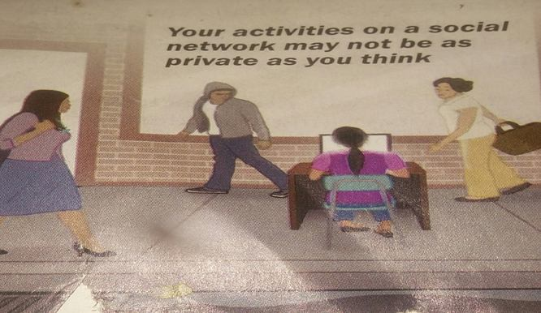

by Joy I. Kalu
It took 38 years for radio to reach 50 million people, 13 years for television to reach the same number, and 4 years for the internet to do so. However, in just one recent year, the popular social media site Facebook signed on over 200 million users! What makes social media so appealing?
First of all, what is a social media or networking site? It is a website that allows those who have an account to communicate with a selected group of friends. Facebook, Twitter, Instagram, WhatsApp and 2Go are just some of these social media sites.
In recent times, we have experienced an overwhelming upsurge in the number of new users, especially youths. This in turn has been a force for good. It has improved relationships, improved learning, created awareness, improved crime detection, helped students make good grades, created thousands of jobs, connected friends and family, and improved the spread useful information and much more. However, it has done the opposite as well. How so? Consider the following merits and demerits of social media and ways in which it has affected the youths today.
To begin, when properly used, social media has been a powerful tool in connecting with loved ones and interacting with friends. In fact, humans are hardwired to interact with humans and that is why social media is so appealing because it does just that. Also, many youths have friends and family members living far away. I do also. In the past, it took weeks or even months for letters or telegrams to get to their destinations. Sometimes, they never get there. With the advent of mobile phones, it became easy to keep in touch with loved ones. But sometimes, we just cannot call these ones because we don’t have airtime. It might be difficult to communicate with friend and family living abroad because of the exorbitant airtime needed. Worse yet, it consumes time especially since you have to call one person at a time, and some may not be at home or available to talk when you are.
However, the social media has made things even easier. With as low as 10 Megabyte of data, one can connect with friends and family members anywhere in the world and for a longer period of time. In fact, some network service providers have made social media free of charge! This has made communication easier.
What’s more, the social media has been very useful when disaster strikes – such as the earthquake that and tsunami that caused untold disaster in parts of Japan on March 11, 2012. During and after such a disaster, phone lines are usually down and no one cares to check emails. So it becomes impossible to communicate with our loved one and inquire about their safety. But with the social media, one can just pick up his cell phone, access the internet and go the page of his or her loved one and read the information posted or even chat briefly. It’s that easy.
But social media has a demerit in this aspect. In the bid to connect with people, many youths have added friends or accepted friend requests from people they know absolutely nothing about. Some of these friends might be criminals, fraudsters, bullies, sexually immoral people and bad friends. These wrong types of friends can prove to be a bad influence. We have many stories of youths who were defrauded, raped, bullied and even murdered by their social media “friends”. Others learn bad things from these so-called friends and end up engaging in crimes.
More alarming also is the amount of time that is spent by teenagers “connecting” with friends and families. Many teenagers have become addicted to the point that social media has taken over their lives. They are so deeply engrossed that they get cut off from the society and hibernate into the world of social media. These youths are constantly thinking about being online. Even when online, they keep thinking about when next they will come online to update their status and post new pictures. They read comments here, post videos there, reply to comments the other side, and before you know it, hours would fly by. This in turn will have negative consequences. These youths end up losing the real friends they have to friends they have not met before, friends that that cannot be of help during times of trials. They get robbed of sleep, isolate themselves from family and friends and become lost in the imaginary world of Social Media. Some end up getting killed in road crashes while charting on social media sites. How tragic!
Next, social media has helped in crime detection. Security agencies have access to people’s personal accounts. This can help in cracking down on criminals and fraudsters. However, it has also increased crime. How so?
Most teenagers think that their privacy is secured while on social media. Hence, they post pictures of where they are or disclose information that are supposed to be kept to them such as their home address, email address, where they attend school, the name of their pet, the times when they are at home and when no one is and other sensitive information. This information’s are enough to tell criminals or stalkers when to strike. It can also be used for identity thefts, hacking, phishing, scams and virus sending.
Let’s use an example. If a teenager had in his possession a large sum of money or a very flashy and expensive phone or gadget, would he display it for everyone to see as he walked down a public street with friends? Doing that would be foolish because he is asking to be robbed. Similarly, it would be foolish to display sensitive information on social media. Doing so will mean asking for trouble. Yet, that is just what many young people have done. They have inadvertently shared such details with total strangers! And many have paid dearly for that!

The social media has also made it possible for pupils and students to make good grades at school. Assignments can now be posted online by teachers and students can have access to them. They can also collaborate with fellow students on assignments. Students can also have easy and free access to resources to help them learn. This in turn boosts learning and grades at school.
However, social media is also responsible for mass failure of pupils and students at school. It discovered that while grades of students who used social media lightly improved, the grades of students who are addicted users declined greatly. One study says that student users have an average GPA of 3.06 while non-users have an average GPA of 3.82.
Furthermore, social media has created thousands of jobs for people. Jarvee.com is an example of this. They manage people’s social media accounts and get paid. All the professionals working for Jarvee.com earns their living as a result of social media. Furthermore, employers can find prospective employees through social media. Others looking for employment use social media to connect with others and this might help them find a job. Still, others who already own a business can use social media to promote or advertise their business, thereby, earning more money.
On the other hand, social media has lead to loss of jobs and unemployment. How so? Stories abound of social media users losing their jobs or being turned down for new jobs because of what they have posted online. This is because so many employers look at an applicant’s social media page to judge his or her character and if the prospective employer see’s nasty things, then he won’t hire the person. That’s it! The person loses that job!
Another notable advantage of social media is that it has facilitated the spread of useful information. Today, useful and even life-saving information’s flood the social media platforms, thereby, creating awareness. And as we know, information is power.
To illustrate, when the Ebola virus hit West Africa, there was panic everywhere. The radio and T.V stations created awareness. However, the social media did more. Using the social media, people posted useful and detailed information’s on how the virus spread and how it can be prevented. People also got to see pictures and videos of people who had this virus. Useful information’s were disseminated and people took precautions. Countless lives were saved.
Now, this is also where the problem comes in. Social media is doing more harm these days by serving as a means people with questionable characters use to spread malicious lies and information’s capable of plunging a country into chaos. Take as a case study what is happening in my country, Nigeria. In as much as there are lingering issues that still needs to be addressed by the government, but so many people has made the matter worse by using the social media as an avenue to spread hate speeches and false information’s capable of sparking serious problems. According to the President, this is a step too far.
Lastly, another serious disadvantage is that the social media can be a very easy place to ruin one’s reputation. With just one thoughtless picture or post, one can ruin a good reputation which he has worked hard to build over the years. It seems that when people go on a social network, they lose their sense of right and wrong. They say and post things that they would never say or do in real life, thus damaging their reputation.
In conclusion, social media can do well, it can also do badly. The bottom line is just moderation. Youths should learn to use the social media with moderation. This will help make the world of social media a great place.
NOTE: This is a an article that took part in our Essay Writing Competition. It was selected to be one of the essays that compete for the second prize. Congratulations!
Student details:
Name: Joy I. Kalu
Age: 16
School: Best Intellectuals Model School Aba
A few words from the author:
I chose to write this essay, after hearing about the competition from my school’s principal, because so many youths today do not know about the dangers of using the social media. What they only care about is posting pictures and updating status and chatting. Therefore, I want the world to hear about the dangers of social media.
Olivia says
Nice one Joy,
Congratulations! I like how you think.
It’s important for younger people to have parent control when they start using it. Then they will be familiar with it’s pros and cons. This was harder for Milenials because their parents were not that familiar with all the things that social media can bring, bad and good. Now for the Generation Z this shouldn’t be the case because their parents are now more included in the digital world and we all talk openly about our good and bad experiences.
Thanks for sharing!
Drashti Tonde says
I like the way you keep your aspects very clearly
Thanks for sharing this article.
Bruce says
Thank you. Keep reading for more great social media tips.
Shivangi Chaurasia says
Very nice speech I can tell in the school I got first prize thanks for sharing
Adam says
Haha, glad it helped in such a way!
Lisa says
As all things in life so the social media has two sides of one coin, good and bad. I prefer to talk about bad things because that’s the way how to improve things. W all use social media, but we must be responsible and we must have our limits.
Jasko says
Today’s purpose of social media is not to connect people, it’s purpose is to get the audience to the businesses. It’s all about the money and how to get it.
Dominic Nason says
I hate to say it because I love to be online, but the influence of social media is not good, we can’t prosper of being on social media, except the case where we run an online business.